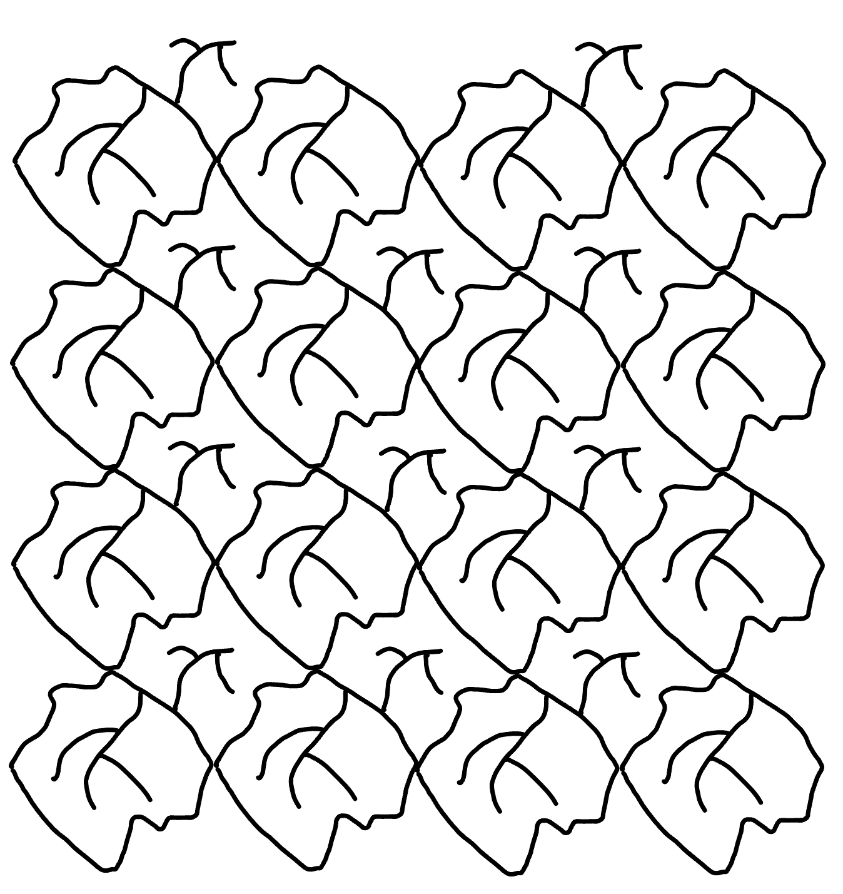
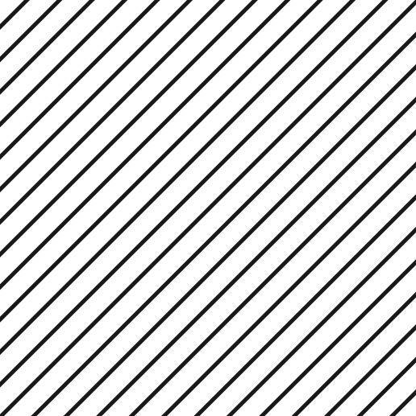

ABOUT ME
I am a 5th-year PhD student in the Department of Mathematics, University of Utah. My advisor is Prof. W. Feldman. I'm interested in homogenization theory, free boundary problems and shape optimization problems.
MY CONTACT DETAILS
Name: Zhonggan Huang
Address: 155 South 1400 East, JWB 319, Department of Mathematics, University of Utah, Salt Lake City, U.S.
E-mail: zhonggan@math.utah.edu
Name: Zhonggan Huang
Address: 155 South 1400 East, JWB 319, Department of Mathematics, University of Utah, Salt Lake City, U.S.
E-mail: zhonggan@math.utah.edu
溯洄从之，道阻且长。溯游从之，宛在水中央。
黄忠淦
Zhonggan Huang
PhD candidate
Department of Mathematics, University of Utah
PhD candidate
Department of Mathematics, University of Utah
Recent figures





RESUME
PREPRINTS
- On the attainability of singular Wiener bound arXiv: 2508.08208
- Homogenization of a vertical oscillating Neumann condition Joint with William Feldman, arXiv: 2505.17298
PUBLICATIONS
- Regularity theory of a gradient degenerate Neumann problem Joint with William Feldman, Journal de Mathématiques Pures et Appliquées, Volume 209, May 2026, 103863
- Is mean curvature flow a gradient flow? arXiv: 2212.03701 (to appear in Proceedings of the American Mathematical Society)
- Homogenization of enhancing thin layers Journal of Differential Equations, Volume 282, 2021, Pages 330-369, ISSN 0022-0396
- [SLIDE] Attainability of the singular Wiener bound and leaf venation patterns, November 03 2025, WashU St. Louis
- [VIDEO] Regularity theory of a gradient degenerate Neumann problem, in Oaxaca on August 13
- [SLIDE] 一个类Signorini梯度退化问题的最优正则性: 10/05/2024 于南方科技大学
- [SLIDE] 大偏差原理与梯度流试讲(On Large Deviation Principle and Gradient Flows): 11/17/2022 于西北大学
- [Thesis] Topics on reaction-diffusion equations with large diffusion rates within thin components: Master Degree Thesis 2021
- [NOTE] Notes on partial differential equations: 2018-2019
THESIS, NOTES, SLIDES AND VIDEOS
MY EDUCATION
University of Utah, PhD student of Mathematics, Salt Lake City, U.S.
August 2021 – Expected July 2026
Southern University of Science and Technology, Master of Mathematics, Shenzhen, China
September 2019 – June 2021
Southern University of Science and Technology, Bachelor of Mathematics and Applied Mathematics , Shenzhen, China
September 2015 – June 2019